GUTS
Home
Actualités
Discographie
Média
Contact
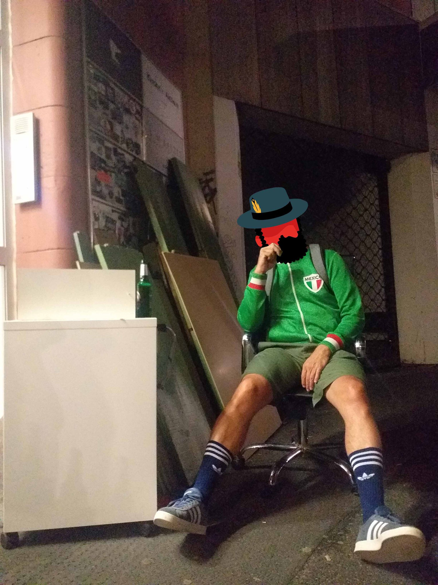
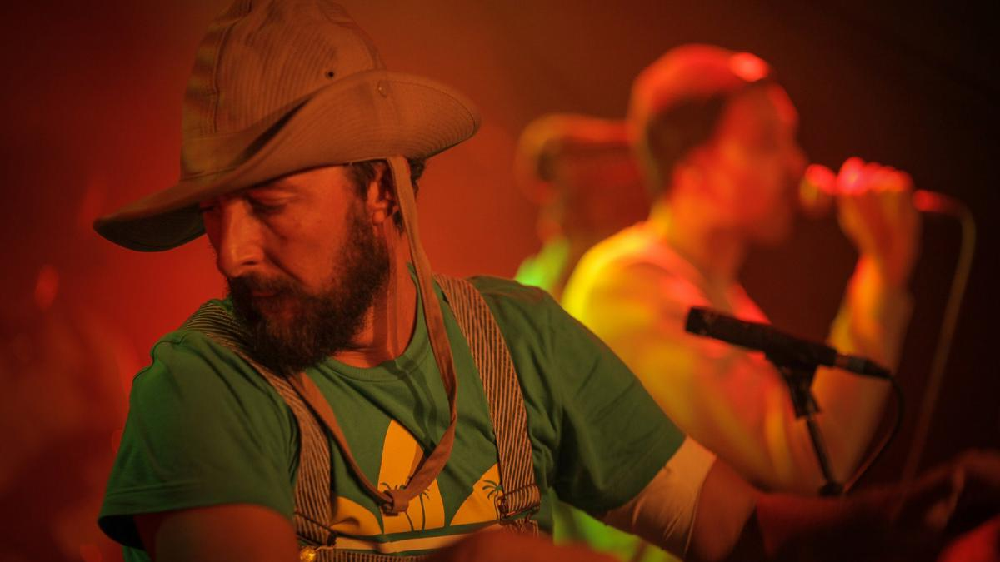
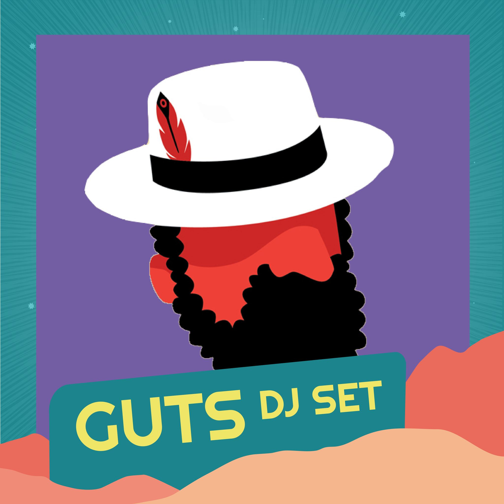
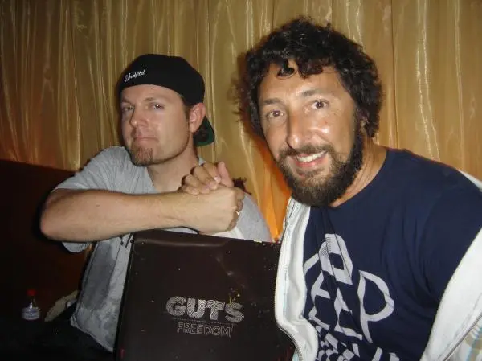
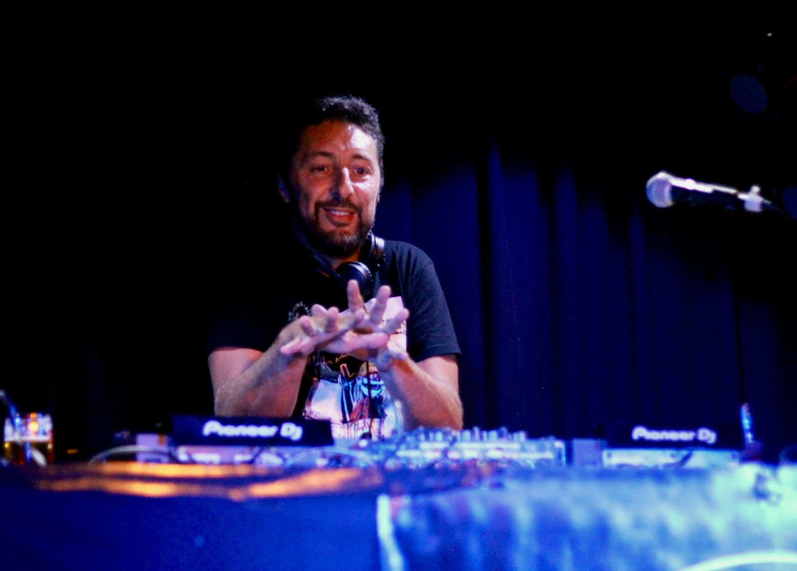
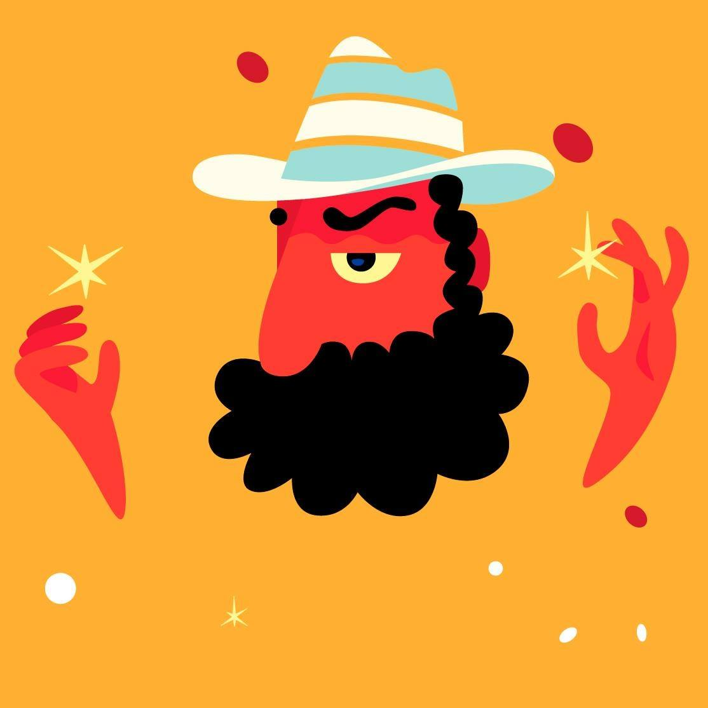
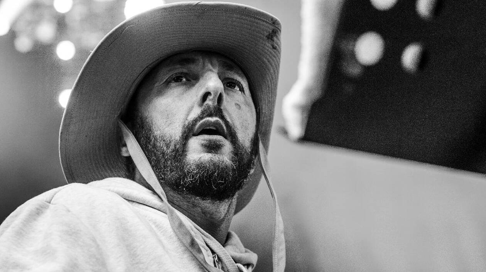
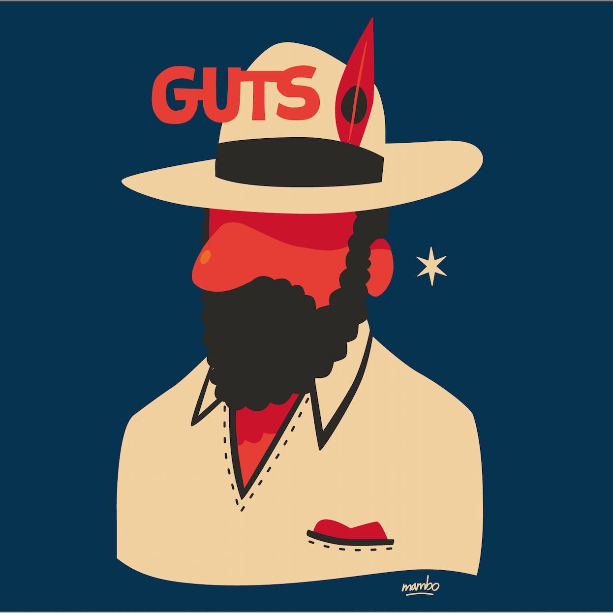
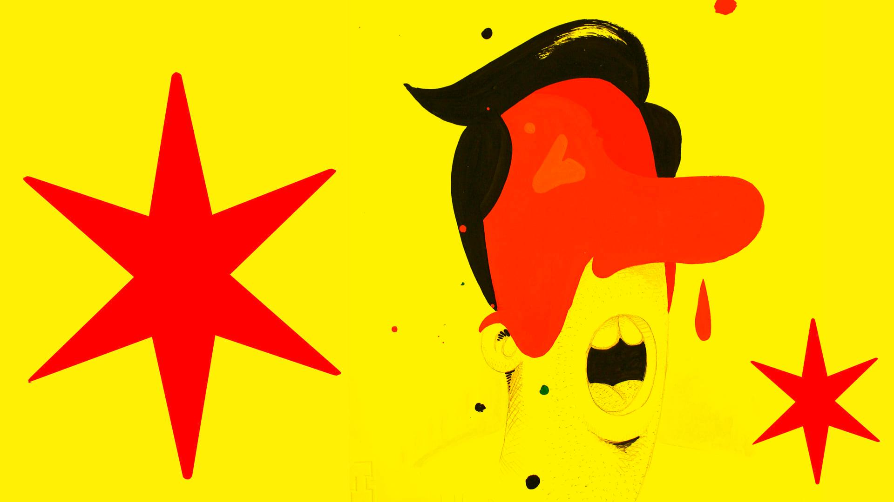
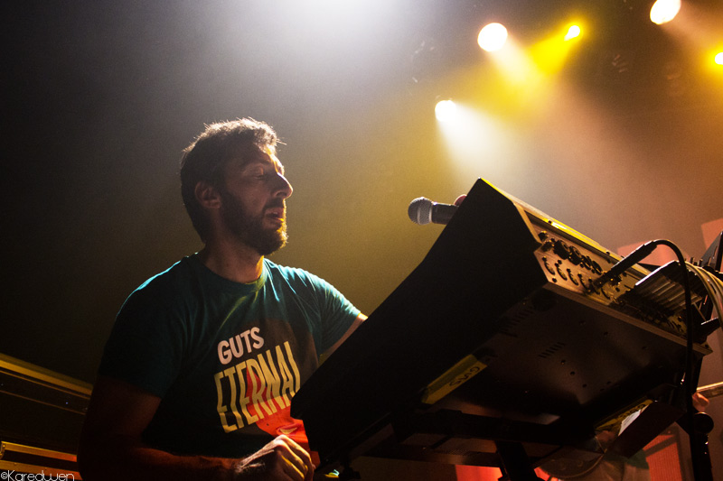
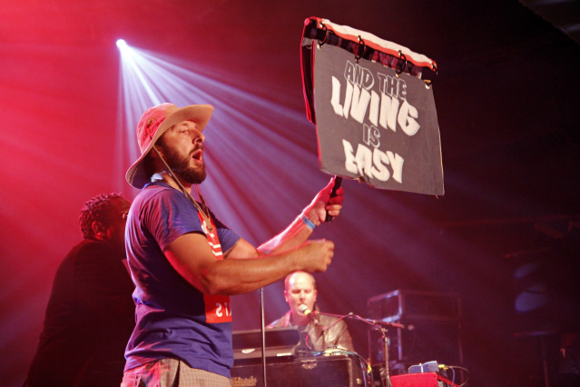
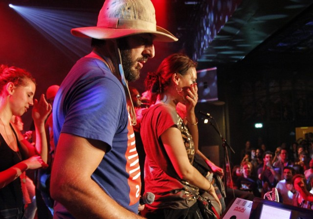
Guts - Want It Back (feat. Patrice) [Official Video Clip]
Guts - Man Funk (feat. Leron Thomas) [Official Audio]
Guts - Aimer sans amour (Official Audio)
Guts - Brand New Revolution - Video by MIRAI MIZUE
The Making of GUTS " Hip Hop After All "
Guts - And the Living is Easy